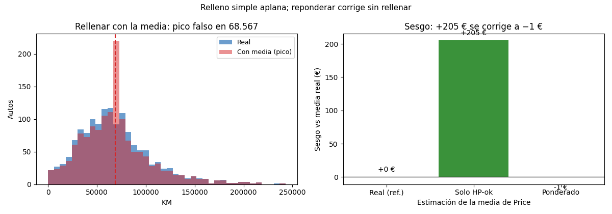

Unidad 4 · Datos faltantes e imputación · Lección 0016
Relleno simple: media, razón y reponderación
Win de hoy: rellenar con media/mediana/constante/razón sobre la inyección 0015 (RMSE HP ≈ 14), ver el pico falso que deja la media y corregir el sesgo +205 € reponderando.
1 · Sustitución por la media (y su pico falso)
El relleno más viejo: cada hueco recibe la media de los observados
(SimpleImputer(strategy="mean")). En HP erra por RMSE 14,1 contra la
verdad tapada (0015). Pero achica la varianza (desvío 15,0 → 14,0) y deja un pico falso en el
histograma: 139 autos con KM = 68.567 idénticos, algo que ningún km real hace. La media preserva el
centro y miente la forma.
from sklearn.impute import SimpleImputer
imp = SimpleImputer(strategy="mean").fit_transform(df[["KM", "HP"]])2 · Mediana, constante y razón (el resto del menú simple)
- Mediana: robusta a extremos; acá RMSE 16,5 en HP (peor que la media: el RMSE premia a la media por matemática).
- Constante: la moda en categorías, o un marcador (ej. −1) + columna bandera “faltaba” en números. Simple y transparente.
- Razón:
HP ≈ 0,0947 × Weight(promedio en observados), RMSE 14,2 ≈ media. Usa información auxiliar; brilla cuando la proporción es estable (acá apenas empata).
3 · Reponderación: corregir sin rellenar
Si el hueco es MAR por edad, los completos no representan: los viejos (baratos) faltan más y la media de
Price en HP-completos da 10.936 € (+205 de sesgo). La
reponderación
pesa cada auto por 1/probabilidad-de-respuesta de su tramo (viejos pesan 1/0,808 ≈ 1,24): media corregida
10.730 € (sesgo −1). Sin inventar un solo dato.
resp = 1 - pd.Series(m_hp).groupby(tramos).mean() # 0,983 / 0,882 / 0,808
w = 1.0 / tramos.map(resp) # jóvenes ≈1, viejos ≈1,24
media_pond = (df.loc[~m_hp, "Price"] * w[~m_hp]).sum() / w[~m_hp].sum() # 107304 · Figura: el pico falso y el rescate

Regenerar la figura (mismo resultado versionado en assets/img/toyota/):
python scripts/make_figures.py --only relleno-simple-media-razon5 · Quiz (auto-chequeo inmediato)
6 · Fuente primaria y cierre
Para profundizar (1 fuente):
Kuhn & Johnson, Applied Predictive Modeling — capítulo de preprocesamiento (imputación simple,
preProcess)
(appliedpredictivemodeling.com, también en
RESOURCES.md del curso).
¿Algo no quedó claro? Preguntame al agente: cuándo la media alcanza, cómo elegir la constante, o por qué ponderar rescata sin rellenar. Esa pregunta vale más que releer.